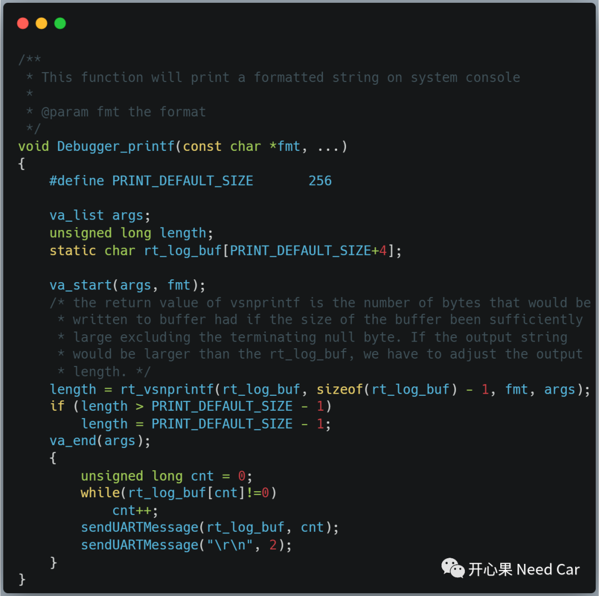
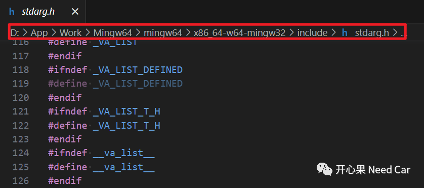
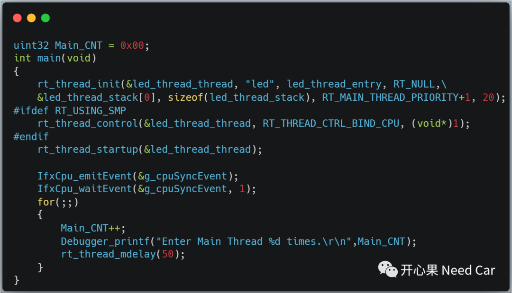
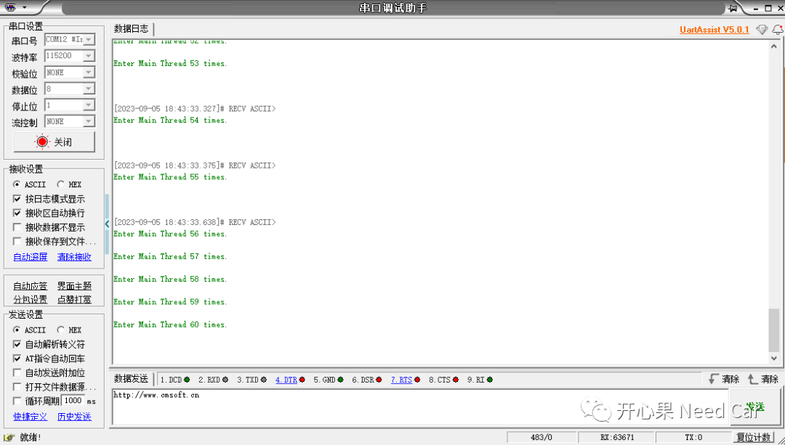

开心果 Need Car · 2023-09-18T07:14:00+08:00 · 微信原文
所以，如果要实现Printf()接口的重定向，选择合适的MCU驱动是第一步，本文选择UART（Universal Asynchronous Receiver-Transmitter）实现Printf()接口的重定向，讨论如何实现Printf()接口重定向到UART。
1、UART驱动实现
2、重定向Printf()
重定向Printf()接口，本文重新命名为Debugger_printf()，在Debugger_printf()接口中调用UART驱动发送接口sendUARTMessage()，Debugger_printf()接口代码示意如下：

（一）<stdarg.h>头文件
Debugger_printf()接口中需要包含<stdarg.h>头文件，因为在如上代码中使用到了宏va_list，而宏va_list在<stdarg.h>头文件中定义。<stdarg.h>头文件并不在工程文件中，而是在Mingw64编译环境库中，示意如下：

除了宏va_list之外，使用到的va_start(v,l)、va_end(v)等也在<stdarg.h>头文件中。
3、Debugger_printf()使用
完成Debugger_printf()接口重定向以后，即可在程序任意需要输出信息的位置打印log，之后在串口终端中显示信息。eg：在main线程中打印信息，代码示意如下：

输出的log信息如下所示：

4、源码链接
往期精彩回顾
工程问题：Full CAN与Basic CAN配置错误，导致信号跳变
Autosar EcuM：APP由RUN到POST_RUN浅析